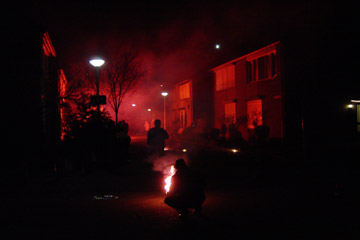
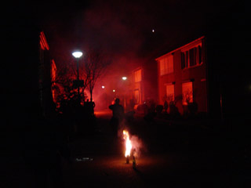
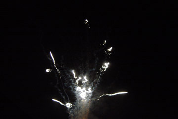
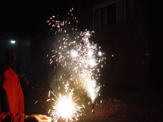
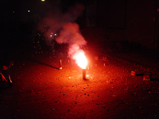
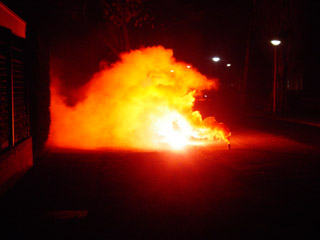

| FEUER FREI -TREEBEEK ABLAZE |

K. ontsteekt een Belgische rookbus. Schudden
voor gebruik, gat maken, lont aanbrengen en
aansteken......

5 minuten rode rook en veel vuur voor € 2,50.

De buren waren ook in België geweest :-)))

Pyrofreak Beavis hield het bij NL-spetters.

Als je dit ruig vindt......

....kijk dan eens naar die ander buren. Vast ook
vrienden van België! Hoe mooi zou dit in het
PLS zijn!